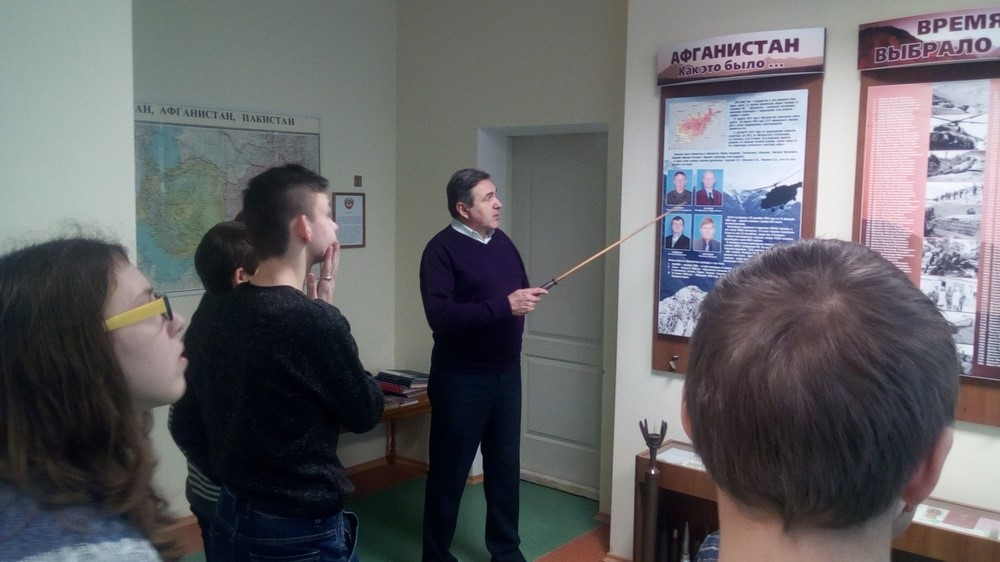
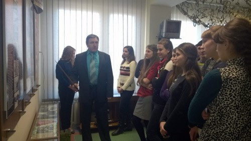

Комната-памяти воинов-интернационалистов Дрогичинского района

Священный долг солдата - защищать. Защищать слабых и беззащитных, защищать мир и благополучие на земле. Экспозиция комнаты- памяти воинов-интернационалистов Дрогичинского района посвящается воинам, живущим и ушедшим, всем тем, кто честно выполнил свой долг, кто остался верен присяге до конца.Музейная комната открыла свои двери для посетителей 14 февраля 2008 г. Музейное помещение состоит из двух отделов: экспозиционной комнаты и комнаты- памяти. Экспозиционная комната представлена несколькими тематическими разделами: "Время выбрало нас". "Афганистан как это было". "Награда за доблесть и честь". "Белорусский союз ветеранов в действии".Ежегодно 15 февраля комната-памяти становится местом встречи воинов-интернационалистов Дрогичинского района членов организации ОО "БСВВА".Руководителем музейной комнаты в настоящий момент является Волосюк Сергей Петрович, учитель истории средней школы №1 г. Дрогичина.
